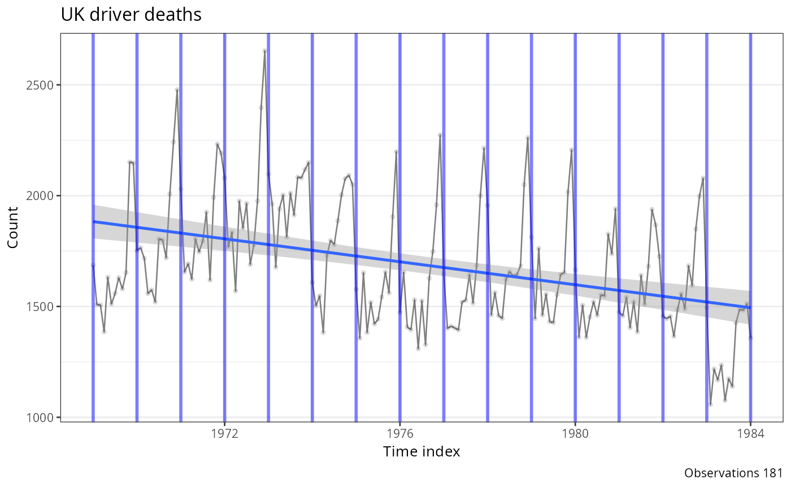
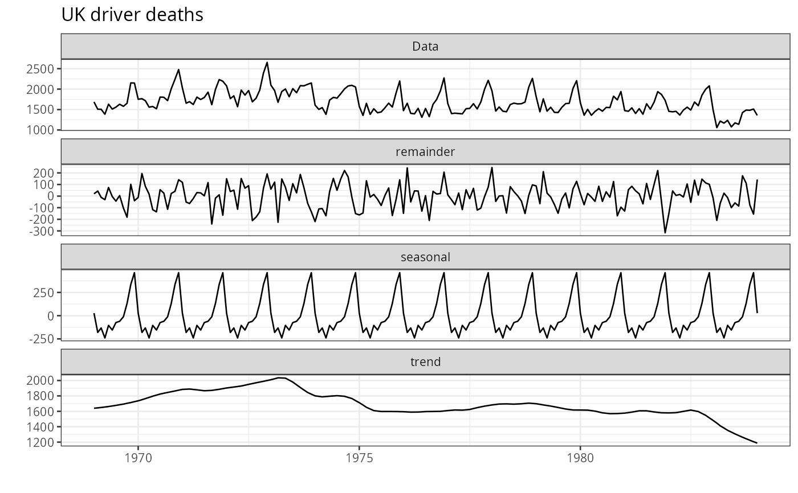
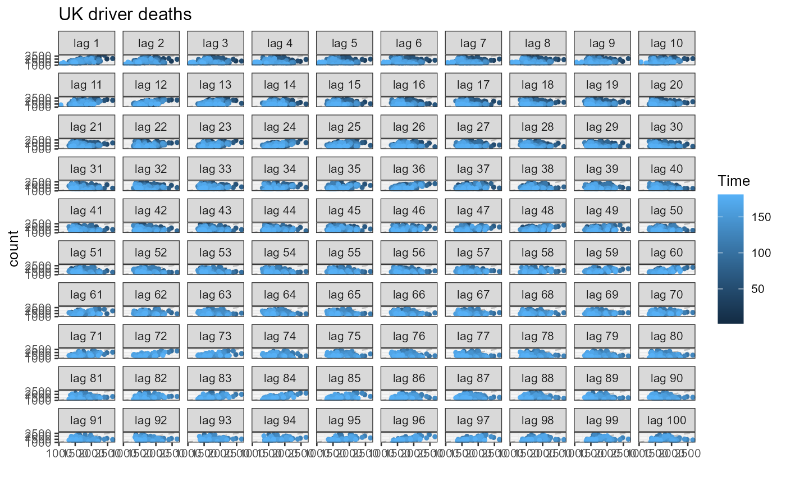

Converts a ts object into a ggplot2 line chart with
semi-transparent points and an overlaid linear trend line. The returned
ggplot object can be extended with additional layers (e.g.
geom_vline() to mark events).
Value
A ggplot object showing the time series as a line with
points, a linear trend line fitted via lm, and a caption
reporting the total number of observations.
Examples
ts_data <- ts(UKDriverDeaths, start = 1969, end = 1984, frequency = 12)
result <- plot_ts(ts_data, title = "UK driver deaths")
for (i in 1969:1984) {
result <- result + geom_vline(xintercept = i, color = "blue", size = 1, alpha = .5)
}
result

autoplot(stl(ts_data, s.window = "periodic")) +
theme_bw(base_size = 10) +
labs(title = "UK driver deaths")

forecast::gglagplot(data.frame(ts_data), do.lines = FALSE, lags = 100) +
theme_bw(base_size = 10) + labs(title = "UK driver deaths", y = "count")
#> Registered S3 methods overwritten by 'forecast':
#> method from
#> autoplot.Arima ggfortify
#> autoplot.acf ggfortify
#> autoplot.ar ggfortify
#> autoplot.bats ggfortify
#> autoplot.decomposed.ts ggfortify
#> autoplot.ets ggfortify
#> autoplot.forecast ggfortify
#> autoplot.stl ggfortify
#> autoplot.ts ggfortify
#> fitted.ar ggfortify
#> fortify.ts ggfortify
#> residuals.ar ggfortify
